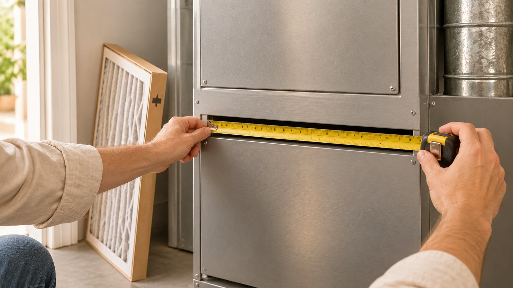
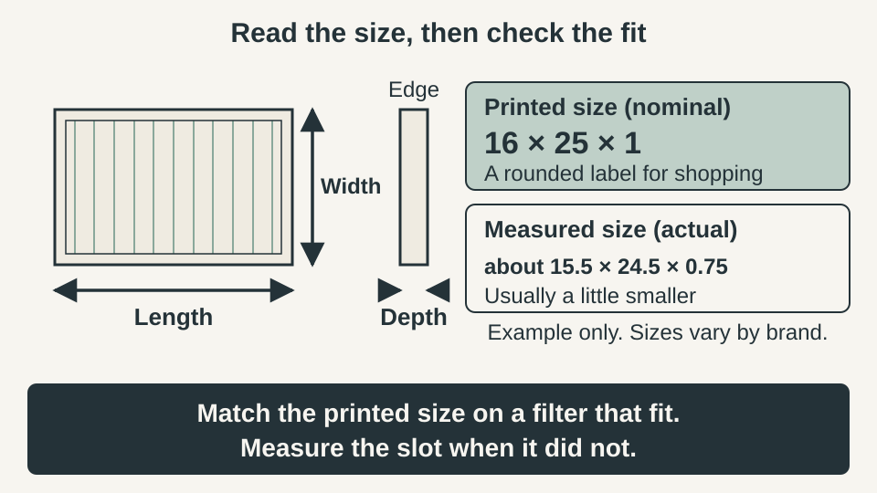
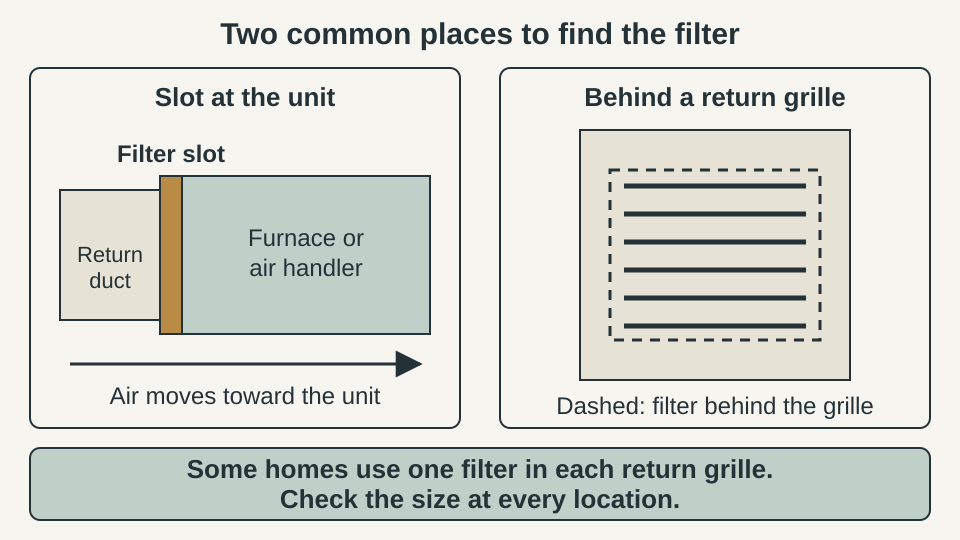
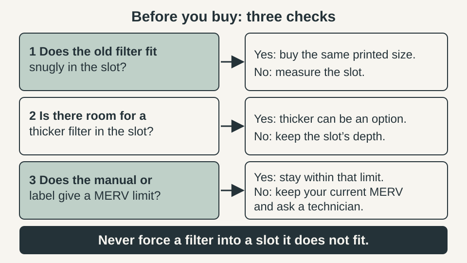
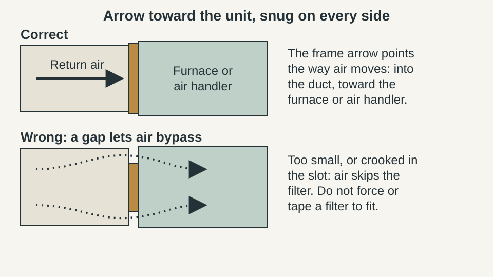

WEEKEND PROJECTS · HVAC MAINTENANCE
What Size HVAC Air Filter Do I Need? Measure the Slot, Check the Fit and Choose MERV

The quickest way to find your air filter size is to read it off the old filter. When the old one does not fit, is missing or has an unreadable label, you measure the slot instead. Either way, three things have to match: length and width, depth, and a MERV rating your system can handle. This guide walks through each and says when to stop and ask an HVAC technician.

The quick answer
- Read the size printed on the old filter’s cardboard frame. If that filter fit snugly, buy the same printed size.
- If it did not fit or you cannot read it, measure the slot: length, width and depth.
- The printed size is nominal, a rounded shopping label. The real dimensions are usually a little smaller.
- A good fit fills the opening, lies flat and leaves no gaps. Never force a filter in.
- MERV cannot be chosen alone. Higher can restrict airflow. If you do not know what your system allows, keep your current MERV and check the manual or ask a technician.
- Turn the system off at the thermostat first.
Quick plan
| Time | About 10 minutes |
| Cost | Only the replacement filter. Measuring is free |
| Best for | Furnace, air handler and central heat pump filters, in a slot or behind a return grille |
| Goal | A filter that fits snugly and a MERV your system can handle |
Step 1: Find the filter

Trane says the filter is in a cabinet next to the furnace or behind a large return air vent on a wall or ceiling. PNNL’s Building America guide describes the slot as sitting between the return air plenum and the air handler cabinet, or in the first few feet of ductwork, with a cover held by clips, thumb screws, a sliding door or a magnetic seal. PNNL also notes that when the air handler is hard to reach, such as in a crawl space or an attic without stairs, filters belong in the return grilles, one in each. If you cannot find it, check the equipment manual.
Step 2: Turn the system off and read the printed size
- Set the thermostat to Off. PNNL lists this before removing the filter.
- Open only the filter cover or grille. Do not open sealed equipment panels and do not modify the slot or the return.
- Before you pull the old filter, note which way its arrow points.
- Read the size on the frame edge. Both Trane and PNNL say that if the old filter fit snugly, a new one with the same length and width will too.
Do not leave the system running without a filter.
Step 3: Nominal versus actual size
The big numbers on the frame are the nominal size. They are a rounded label for shopping. A filter sold as 16 × 25 × 1 might measure about 15.5 × 24.5 × 0.75 inches, and Trane’s guide gives a very similar example. Treat that as an illustration only. Manufacturers differ, so use the example to understand the gap, not to size your own filter. PNNL’s advice when shopping is to read the MERV rating, the thickness and the actual dimensions, not just the nominal size.
| Label | What it tells you | What to do with it |
|---|---|---|
| Printed size (nominal) | A rounded label for shopping | Match it to the old filter if that one fit snugly |
| Actual size | The real length, width and depth, usually a little smaller | Check it when the old filter was loose or you switch brands |
| Depth | How thick the filter is; deeper pleats give more surface area | Use the thickest filter the slot is built for |
| MERV rating | How well it captures particles, according to EPA | Choose within your system’s limits, not on its own |
| Airflow arrow | Which way air should pass through | Point it into the duct, toward the unit |
| Resistance or pressure drop, if printed | How much the filter resists airflow | Compare with your system’s label or manual |
Step 4: Measure the slot when the label does not help
- When. The old filter was loose or forced, the label is gone, or you are switching to a different style.
- What. Use a tape measure to get the length, width and depth of the opening the filter sits in, in inches. PNNL says to measure when there are air gaps around the old filter. Measure twice and write the numbers down.
- Depth. Check how much room the slot has. PNNL’s advice is the thickest filter the slot can accommodate, but only in a slot made for it.
- Match. Compare your measurements with the actual dimensions listed on the filter package or product page. If nothing listed matches, do not trim or bend a filter. Check the manual or ask a technician.
Step 5: Check the fit and stop bypass
- PNNL describes a properly sized filter as one that fits the slot, completely covers the duct opening and lies flush with the frame. It should not sit at an angle.
- If the filter needs pushing, bending or tearing to go in, it is the wrong size.
- If it is quite loose, PNNL suggests adhesive foam weatherstripping around the cardboard frame to reduce the air that bypasses it. Treat that as a stopgap until you buy the right size.
- Put the slot cover back. PNNL says it should fit tightly but should not be taped or caulked, so you can change the filter easily. If there is no door, a magnetic cover is an option.
A missing or loose cover matters too. PNNL warns that the air handler can pull unconditioned or unwanted air into the home, especially if it sits in a garage.
Step 6: Choose MERV within your system’s limits

EPA says MERV reports how well a filter captures particles between 0.3 and 10 microns, and that a higher rating traps specific sizes better. Its advice is conditional: if you upgrade, choose at least MERV 13, or as high a rating as your system fan and filter slot can accommodate, and you may need an HVAC technician to find the highest rating that works.
PNNL explains the catch. Higher-MERV filters can clog faster, restricting airflow, adding wear and limiting heating and cooling. PNNL tells owners to check with their HVAC service company before moving from a low rating to MERV 13 or higher, and says not to install a rating higher than the system was designed for. Look for a label at the return grille, the equipment manual, or resistance figures printed on the filter. If you cannot find a limit, keep the same MERV as before and ask a technician.
Step 7: Install it with the arrow toward the unit

- Remove the plastic wrap but not the cardboard frame. PNNL notes the wire over the media can be sharp.
- Write the date on the frame edge you can see.
- Slide it in with the arrow pointing into the duct, toward the furnace or air handler.
- Replace the cover, then turn the system back on.
No single replacement interval fits every home. Trane says it depends on filter quality and MERV, how hard the system runs and whether you have pets, and that you should change filters year-round. PNNL says to replace a filter right away if it is clogged with debris, has collapsed fins, bangs when the system starts or is damp or moldy. Follow the filter label and your manual.
Common mistakes
- Buying by memory instead of reading the frame or measuring the slot.
- Forcing a filter that is slightly too big, or using one that is too small.
- Ignoring the arrow, or installing the filter backwards.
- Assuming a higher MERV is always better, or that MERV 13 suits every system.
- Leaving the cover off, taping it shut or running the system with no filter.
- Assuming every return grille takes the same size.
When to ask an HVAC technician
- You cannot find the slot, or the slot has no usable cover.
- You do not know the system’s approved MERV or pressure drop and want to move up.
- No standard filter matches your measurements.
- Airflow feels weak or the system is noisy after a change.
- The filter is damp or moldy, which can point to a moisture problem.
Do not open sealed panels or modify the return to solve a fit problem.
FAQ
What size air filter do I need?
Start with the size printed on the frame of the filter you have now. If that filter fit snugly, buy the same printed size. If it was loose, forced in, missing or unreadable, measure the slot for length, width and depth and check the equipment manual.
Can I use a filter that is a little too small?
No. A properly sized filter fits the slot, covers the whole duct opening and lies flat. A gap lets air bypass the filter. PNNL suggests adhesive foam weatherstripping around a loose frame as a stopgap, but the right size is the fix.
Is a thicker filter better?
Often, if the slot is built for it. PNNL advises the thickest filter the slot can accommodate, because deeper pleats give more surface area and better airflow for longer. Never force a thicker filter into a slot that was not made for it.
Should I use MERV 13?
Not automatically. EPA says that if you upgrade, choose at least MERV 13 or as high a rating as your system fan and filter slot can accommodate, and that you may need an HVAC technician to find the highest rating that works. If you cannot confirm what your system allows, keep your current MERV.
Which way does the filter arrow point?
Toward the furnace or air handler, in the direction the air moves into the duct. Note the arrow on the old filter before you remove it, or mark an arrow on the cabinet so the next change is easy.
Does the filter matter when I only run the air conditioner?
Yes. Trane notes that the furnace acts as the air handler when an air conditioner or heat pump is cooling, so air still passes through the filter. Follow the filter label and the equipment manual for how often to check it.
Keep going
- How to choose a bathroom exhaust fan is a separate ventilation task. A bathroom fan and a furnace filter are not interchangeable.
- How to reduce bathroom condensation if your moisture problem is in one room, because a central filter does not remove moisture.
Sources and last checked
Pages were read on 12 November 2026. The one size example is illustrative only, based on a similar example in the Trane guide.
- EPA, “What is a MERV rating?” (updated January 2026): https://www.epa.gov/indoor-air-quality-iaq/what-merv-rating
- PNNL, Building America Solution Center, “Replace Air Filter Located in Furnace or Central Heat Pump Air Filter Slot”: https://basc.pnnl.gov/diy-guides/replace-air-filter-located-furnace-or-central-heat-pump-air-filter-slot
- PNNL, Building America Solution Center, “Proper Installation of Furnace and Air-Handler Filters”: https://basc.pnnl.gov/resource-guides/proper-installation-furnace-and-air-handler-filters
- Trane, “Furnace Filter Guide: Everything You Need to Know”: https://www.trane.com/residential/en/resources/troubleshooting/gas-furnaces/furnace-filter-guide/